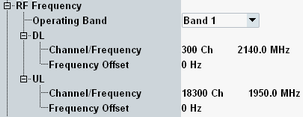

This section configures the operating band and the channel/frequency for uplink and downlink.
The uplink settings configure the center frequency of the RF analyzer. The downlink settings configure the carrier center frequency of the generated NB-IoT signal.

To specify the DL and UL frequencies, select an operating band first, then enter a valid channel number or frequency for UL or DL. The related frequency or channel number and the parameters for the other direction are calculated automatically.
The relation between operating band, carrier frequencies and channel numbers is defined by 3GPP (see "Operating Bands").
In the guard-band operation mode and the in-band operation mode, there are channel raster offsets added to the configured RF frequencies, see "Operation Modes".
Remote command:You can specify positive or negative offsets to be added to the carrier center frequencies. This setting is useful, for example, if the UE has a frequency offset relative to the channels defined by 3GPP.
Remote command: